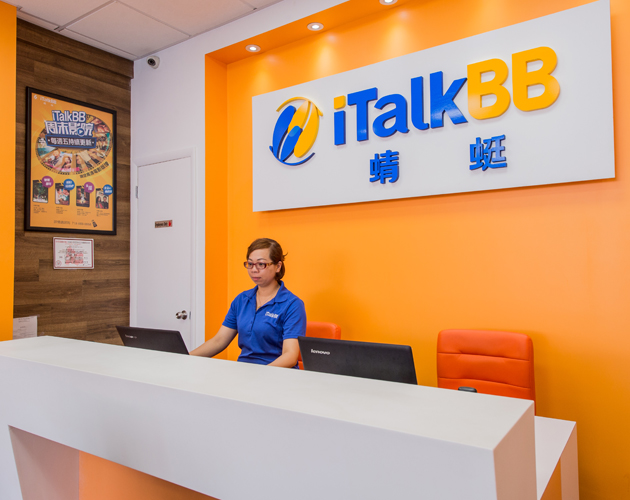

人背井而心不離鄉，iTalkBB平價＂保持通話＂
(美國弗吉尼亞州維也納訊)
留學或移民美國是多數人的夢想。 對於離鄉背井，隻身來到美國的您來說，和朋友家人間的聯繫成為撫慰心靈的一大支柱。使用傳統的家庭電話直撥越洋電話那麼貴，一天到晚買電話卡又這麼地費時耗力。真的沒有其他的辦法嗎？專門為海外華人量身訂做的新家庭電話iTalkBB 為您解決通訊上的所有問題。iTalkBB不但為您提供美國境內本地及長途的服務，還為您提供比電話卡費率還低的家庭電話直撥國際長途服務。不必改變您撥打電話的習慣，不必輸入密碼或賬號，家裡電話拿起來就可以經濟又實惠地撥打美國各地與全球。讓您天天與家人輕鬆地"保持通話"。
iTalkBB 的家庭經濟計劃，每月只要$4.99，就可以享受每分鐘 2分錢撥打美國、加拿大、中國、香港、和台灣的超低價家庭電話服務。 支付市話費用，享受全球通話。打多少，就付多少。iTalkBB 另推出包月計劃，每月只要$24.99，就可以無限免費地撥打美加中港台等共29個國家和地區。讓您想和家人聊多久，就聊多久，長話再也不必短說。
使用iTalkBB不但每月可以幫您節省高達70%的家庭電話費。遠在太平洋另一端的的親戚朋友給您打電話也同樣省錢，他們只需要支付當地的市話費用，撥打一個iTalkBB獨家免費提供的中國或台灣號碼(可另加購香港號碼)，就可以接通到您美國的家庭電話上 。雙向平價溝通，保持通話不用擔心。
關於 iTalkBB：
iTalkBB新電信是享譽全美的優秀通訊品牌，是國際電訊行業的領導和先驅。其以頂級全球網絡和前沿技術為依託，以最具競爭力的價格為客戶提供高質、清晰的本 地、國內及國際長途電話服務，以及高清中文電視直播、回播與點播服務。其電話業務能完全取代傳統家庭電話，並享受多重免費提供的附加功能如來電等待、三方通 話、來電顯示、呼叫轉移等。另有獨一無二的功能——中國大陸、台灣、香港、南韓當地號碼，當地親友只要撥打此號碼，就能接通到在美國的親友，而無需支付國際 長途費用 。iTalkBB的高清中文電視服務，自問世以來便受到了廣泛的好評和歡迎。超過五十個熱門頻道支持實時直播與48小時回看，海量最新電影電視劇綜藝節目免 費無限點播，讓用戶以最低價格盡享華語娛樂。iTalkBB新電信將不斷努力，與您共同成就更美好的生活。iTalkBB設有24小時中英文的客戶服務熱線: 1-877-482- 5522和官方網站www.iTalkBB.com，一年365天提供不間斷的服務與更多信息的查詢。